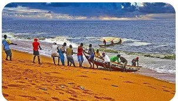

World Heritage
Historic Town
The Historic Town of Grand-Bassam preserves an important example of colonial urban planning and architecture.
Explore the history, cultural heritage, architecture, and coastal character of one of Côte d'Ivoire's most important historic cities.
Explore Heritage & AttractionsGrand-Bassam is a historic coastal city in Côte d'Ivoire known for its cultural heritage, colonial-era architecture, and connection to the Atlantic Ocean and surrounding lagoon environment.
The Historic Town of Grand-Bassam was inscribed on the UNESCO World Heritage List in 2012. Its historic urban landscape reflects the development of the city during the late nineteenth and early twentieth centuries.
This guide introduces visitors to the city's heritage, historic places, cultural features, and practical information for exploring Grand-Bassam.
Discover some of the features that make Grand-Bassam culturally and historically significant.
The Historic Town of Grand-Bassam preserves an important example of colonial urban planning and architecture.

The N'zima community forms an important part of the living cultural heritage associated with Grand-Bassam.

The lighthouse is one of the historic landmarks associated with Grand-Bassam's maritime and colonial history.
Learn about Grand-Bassam's role in the history and development of Côte d'Ivoire.
Discover historic buildings, verandas, galleries, streets, and other features of the historic town.
Experience the connection between historic architecture and living cultural traditions.
Find useful information to help you prepare for your visit to Grand-Bassam.
Open Visitor Guide